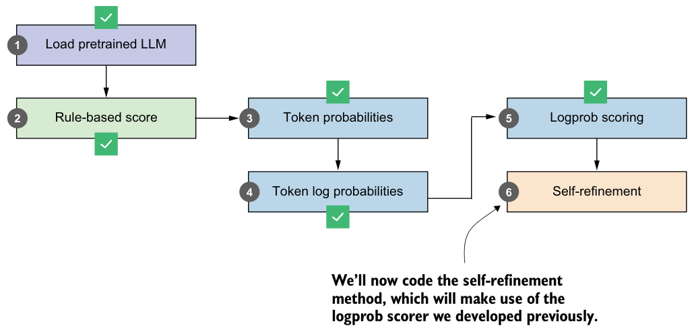
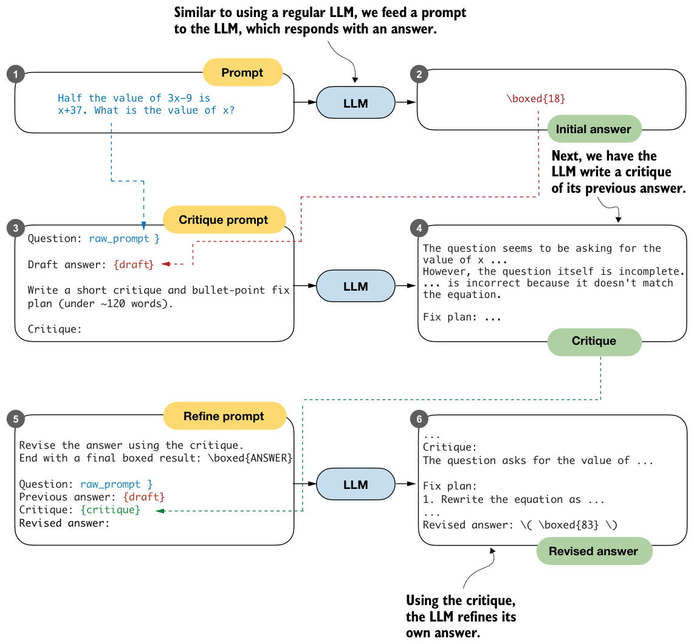

5.7Self-refinement through iterative feedback
Having introduced several methods for scoring LLM answers, let’s now get to the core inference-scaling technique of this chapter, self-refinement (figure 5.19). We’ll first introduce self-refinement and walk through the process manually. In the next section, as shown in figure 5.19, we’ll automate the self-refinement loop and add support for the scoring methods developed earlier in the chapter (the heuristic scorer and the average logprob scorer).

Self-refinement is a technique in which the LLM analyzes and refines its own answers. As shown in figure 5.20, the LLM starts with an initial answer to the prompt, as in regular LLM usage. Then it critiques the answer and refines it.
The self-refinement procedure in figure 5.20 may look complicated at first, but it’s essentially just a sequential application of the text generation function to different prompts and inputs. Let’s walk through it step by step with a code example.
We’ll start with the base prompt and the answer (steps 1 and 2 in figure 5.20), based on the code from section 5.2.

raw_prompt = (
"Half the value of $3x-9$ is $x+37$. "
"What is the value of $x$?"
)
prompt = render_prompt(raw_prompt)
torch.manual_seed(123)initial_response = generate_text_stream_concat_flex(
model, tokenizer, prompt, device,
max_new_tokens=2048, verbose=True,
generate_func=generate_text_top_p_stream_cache,
temperature=0.7,
top_p=0.9,
)The LLM responds with " \boxed{18}", which is incorrect (the correct answer is 83).
Next, we have the LLM critique the answer. To do this, we write a critique prompt that includes the original question (raw_prompt) and the answer (draft), as shown in steps 3 and 4 in figure 5.20.
def make_critique_prompt(raw_prompt, draft):
return (
"You are a meticulous reviewer. Identify logical errors, missing "
"steps, or arithmetic mistakes. If the answer seems correct, "
"say so briefly. Then propose a concise plan to fix issues.\n\n"
f"Question:\n{raw_prompt}\n\n"
f"Draft answer:\n{draft}\n\n"
"Write a short critique and bullet-point fix plan "
"(under ~120 words).\n"
"Critique:"
)critique_prompt = make_critique_prompt(raw_prompt, initial_response)
torch.manual_seed(123)
critique = generate_text_stream_concat_flex(
model, tokenizer, critique_prompt, device,
max_new_tokens=2048, verbose=True,
generate_func=generate_text_top_p_stream_cache,
temperature=0.7,
top_p=0.9,
)The preceding critique prompt lets the LLM write an elaborate critique that even contains the correct answer itself:
The question seems to have a logical error in its setup. The statement
"Half the value of $3x-9$ is $x+37$" is incorrect because half of $3x-
9$ should be $(3x-9)/2$, not $3x-9$. The equation should be $\frac{1}{2}
(3x-9) = x + 37$.
Fix Plan:
1. Correct the equation to $\frac{1}{2}(3x-9) = x + 37$.
2. Multiply both sides by 2 to eliminate the fraction: $3x - 9 = 2(x + 37)$.
3. Distribute the 2 on the right side: $3x - 9 = 2x + 74$.
4. Subtract $2x$ from both sides: $x - 9 = 74$.
5. Add 9 to both sides: $x = 83$. Note that the critique can contain factual errors. For instance, it says "The question itself is incomplete", which is not true, yet it still proceeds with a correct plan for a fix. This is important because, in self-refinement, a critique can be useful even if parts of it are wrong, as long as it pushes the model toward a better revision overall.
Finally, we use this refinement prompt to revise the original answer (steps 5 and 6 in figure 5.20).
def make_refine_prompt(raw_prompt, draft, critique):
return (
"Revise the answer using the critique. Keep it concise and "
"end with a final boxed result: \\boxed{ANSWER}\n\n"
f"Question:\n{raw_prompt}\n\n"
f"Previous answer:\n{draft}\n\n"
f"Critique:\n{critique}\n\n"
"Revised answer:"
)
refine_prompt = make_refine_prompt(raw_prompt, initial_response, critique)
torch.manual_seed(123)
revised_answer = generate_text_stream_concat_flex(
model, tokenizer, refine_prompt, device,
max_new_tokens=2048, verbose=True,
generate_func=generate_text_top_p_stream_cache,
temperature=0.7,
top_p=0.9,
)While the base model is not the best instruction follower, the refinement prompt gets the LLM to generate the correct answer:
...
\boxed{83}
Final result: The value of $x$ is \boxed{83}.This example illustrates a single refinement loop. In practice, it’s common to repeat this loop for multiple iterations. Next, we’ll code a function to automate this process.